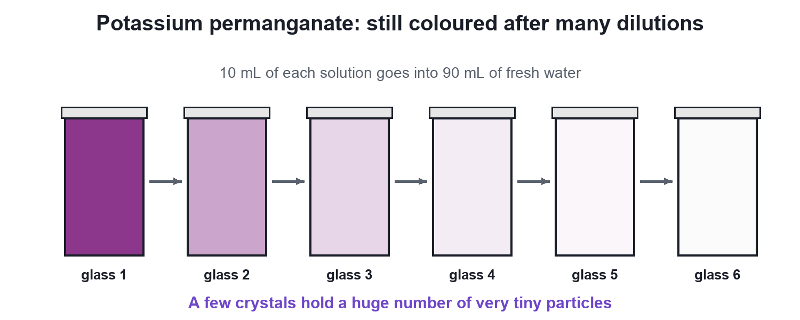

Chapter 1 · Chemistry
Particles of Matter
Video not playing? Watch on Instagram · YouTube
Matter looks continuous, but it is made of extremely small particles. Two crystals of potassium permanganate can colour glass after glass of water.
Download the short notesPDF, 87 KB · solved examples, practice set and answer key Up next in this chapter
 Particles Have Spaces Between Them50 mL of water plus 50 mL of alcohol gives only about 96 mL. The reason: particles of matter have spaces between them.Chemistry
Particles Have Spaces Between Them50 mL of water plus 50 mL of alcohol gives only about 96 mL. The reason: particles of matter have spaces between them.Chemistry
Key points
- Matter is not continuous: it is made of very tiny particles.
- The particles are far too small to see, even with an ordinary microscope.
- KMnO₄ activity: the colour stays visible after many dilutions.
- A few crystals contain a huge number of particles.
The potassium permanganate activity (NCERT)

- Dissolve 2–3 crystals of potassium permanganate in about 100 mL of water: deep purple.
- Take 10 mL of it into 90 mL of clear water.
- Take 10 mL of the new solution into another 90 mL of water.
- Repeat 5–8 times: the water is still coloured.
What it shows
A few crystals contain a very large number of very small particles, which keep spreading out into every glass. So matter is made of particles, and they are extremely small.
- Sugar dissolves and the water level hardly rises: its particles fit into the spaces between water particles.
- A few drops of Dettol or ink spread their smell or colour through a whole glass.
Common mistakes: the colour disappears on dilution (it gets lighter but stays visible); particles are dust-sized (they are far smaller).
Quick quiz
4 questions. Choose an answer for each, then submit to see your score and the explanations.